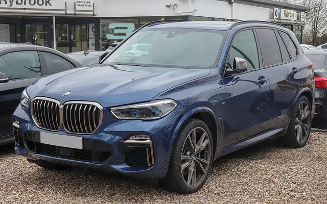

Par Motor › Precios por modelo › BMW X5
Precio de segunda mano · noviembre de 2026¿Cuánto vale un BMW X5 de segunda mano?

Precio justo estimado de un BMW X5 usado en España, año por año, con los kilómetros normales para su edad y en buen estado: de 13.400 € a 89.800 €. Para tasar el tuyo con sus kilómetros reales y su estado, usa el tasador gratis.
Precios del BMW X5 por año
X5 E70 (2007–2013)
Precio de nuevo: xDrive30d 245 CV, 65.000 € · xDrive30i 272 CV, 62.000 € · xDrive35d 286 CV, 70.000 €
| Año | Km normales | xDrive30d 245 CV · Diésel | xDrive30i 272 CV · Gasolina | xDrive35d 286 CV · Diésel |
|---|---|---|---|---|
| 2013 | 100.000 km | 22.500 € | 22.100 € | 24.200 € |
| 2012 | 100.000 km | 20.700 € | 20.400 € | 22.300 € |
| 2011 | 100.000 km | 19.000 € | 18.700 € | 20.500 € |
| 2010 | 100.000 km | 17.500 € | 17.200 € | 18.900 € |
| 2009 | 100.000 km | 16.100 € | 15.800 € | 17.300 € |
| 2008 | 100.000 km | 14.800 € | 14.600 € | 15.900 € |
| 2007 | 100.000 km | 13.600 € | 13.400 € | 14.700 € |
X5 F15 (2013–2018)
Precio de nuevo: xDrive25d 231 CV, 68.000 € · xDrive35i 306 CV, 72.000 € · xDrive40e (enchufable) 313 CV, 78.000 €
| Año | Km normales | xDrive25d 231 CV · Diésel | xDrive35i 306 CV · Gasolina | xDrive40e (enchufable) 313 CV · Híbrido enchufable |
|---|---|---|---|---|
| 2018 | 100.000 km | 33.700 € | 32.500 € | 31.700 € |
| 2017 | 100.000 km | 32.700 € | 31.300 € | 30.500 € |
| 2016 | 100.000 km | 30.300 € | 30.100 € | 29.300 € |
| 2015 | 100.000 km | 27.800 € | 28.800 € | 28.100 € |
| 2014 | 100.000 km | 25.600 € | 27.600 € | 26.900 € |
| 2013 | 100.000 km | 23.500 € | 25.700 € | 25.100 € |
La cadena de distribución está en la parte trasera del motor y se desgasta o se rompe; para cambiarla hay que sacar el motor, así que la factura es alta. Un silbido o ruido de cadena con el motor en marcha es la señal. Pregunta si se cambió la cadena.
X5 G05 (2018–hoy)
Precio de nuevo: xDrive25d 231 CV, 75.000 € · xDrive40i 340 CV, 88.000 € · xDrive45e (enchufable) 394 CV, 92.000 €
| Año | Km normales | xDrive25d 231 CV · Diésel | xDrive40i 340 CV · Gasolina | xDrive45e (enchufable) 394 CV · Híbrido enchufable |
|---|---|---|---|---|
| 2026 | 10.000 km | 73.500 € | 89.800 € | 84.500 € |
| 2025 | 30.000 km | 61.200 € | 74.800 € | 70.400 € |
| 2024 | 50.000 km | 56.300 € | 68.800 € | 64.700 € |
| 2023 | 70.000 km | 51.800 € | 63.200 € | 59.500 € |
| 2022 | 90.000 km | 43.800 € | 58.200 € | 54.700 € |
| 2021 | 100.000 km | 39.800 € | 51.300 € | 48.300 € |
| 2020 | 100.000 km | 39.100 € | 44.300 € | 41.700 € |
| 2019 | 100.000 km | 38.200 € | 41.200 € | 38.700 € |
| 2018 | 100.000 km | 37.200 € | 39.700 € | 37.400 € |
Kilómetros normales: 15.000 al año en gasolina, híbridos y eléctricos, y 20.000 en diésel, con un máximo de 100.000 km (por encima no tasamos: el precio depende demasiado del historial de cada coche). Cifras redondeadas a 100 €.
Preguntas frecuentes
¿Cuánto vale un BMW X5 de segunda mano?
Según el año, la versión y los kilómetros, un BMW X5 usado vale hoy de 13.400 € a 89.800 € en España. El más barato de nuestra tabla es un xDrive30i de 2007 (13.400 €) y el más caro un xDrive40i de 2026 (89.800 €). Son precios justos estimados entre particulares y profesionales, con los kilómetros normales para su edad y en buen estado.
¿Cuánto valor pierde un BMW X5 al año?
Con unos años encima, un BMW X5 pierde alrededor de un 11 % de su valor cada año (calculado sobre el xDrive25d de la generación X5 G05). Los primeros años la caída es mayor y a partir de los 70.000 km se acelera.
¿Qué motorizaciones tiene el BMW X5?
En nuestra base de datos hay versiones diésel, gasolina y híbrido enchufable, en 3 generaciones: X5 E70, X5 F15 y X5 G05.
¿Qué motores del BMW X5 dan problemas?
Ojo con el BMW 2.0 diésel N47 (cadena de distribución) (xDrive25d, 2013–2014): son motores con fallos graves y muy extendidos. Antes de comprar uno, pide el historial de mantenimiento y comprueba si ya se hizo la reparación. El resto de motores no tiene problemas fuera de lo normal.
¿Cómo sé si me piden demasiado por un BMW X5?
Abre el tasador de Par Motor, elige el BMW X5, el año y los kilómetros reales, y escribe lo que te piden. Te diremos si está por debajo del precio justo (chollo) o por encima (caro). Es gratis y no pide registro ni matrícula.
Otros BMW
- i3
- i4
- i5
- iX
- iX1
- iX3
- Serie 1
- Serie 2 Active Tourer
- Serie 2 Coupé
- Serie 2 Gran Coupé
- Serie 3
- Serie 4
- Serie 5
- Serie 6 y Serie 8
- Serie 7
- X1
- X2
- X3
- X4
- X6
- X7
- Z4
Compara su coste real
El precio de compra es solo una parte. Mira cuánto te costaría al mes con combustible, seguro, neumáticos, mantenimiento y lo que pierde de valor.
Abrir el comparador →